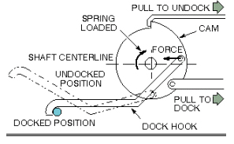
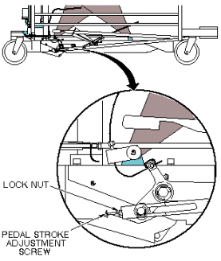
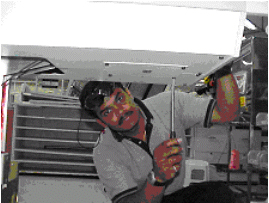
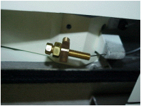

Operating Documentation
Direction 5133330-3, Rev# 14
Signa EXCITE HD 3.0T Service Methods
Module Version 1.0, Version Date 5/3/07
Operating Documentation |
| Required Persons | Preliminary Reqs | Procedure | Finalization |
|---|---|---|---|
| 1 |
The table dock hook operates on the over-center principle. This is implemented by fixing one end of the hook to a cam on a shaft. When the force on the hook at its point of attachment to the cam is on the opposite side of the shaft as the hook end, this force will tend to keep the hook in the docked position. When the point of force is moved over-center of the shaft centerline, the force will no longer act to keep the hook retracted, and the spring loaded cam will extend the hook to the undocked position. See Illustration 1. Two style table adjustments are currently in the field. The type table you have is determined by manufacturing date. Choose the procedure appropriate for your table style.
Illustration 1: DOCKING MECHANISM DIAGRAM

Remove all outer and inner trim covers from sides of Patient Transport.
Tighten or loosen the stroke adjustment screw as required so when the dock pedal is fully depressed during the docking operation, the hook cam mechanism just goes over-center. See Illustration 2.
Illustration 2: DOCK PEDAL STROKE ADJUSTMENT

Remove the hatch at the rear of the table for adjusting the undock cable. See Illustration 3.
Illustration 3: HATCH REMOVAL

Loosen the Screw (Counter clock wise) until the table undock easily when the pedal is pushed. (This will tighten the cable pulling the lever down). See Illustration 4.
Illustration 4: CABLE TENSION ADJUSTMENT

When finished, tighten the lock nut and reattach the cover. See Illustration 3.
No finalization steps.